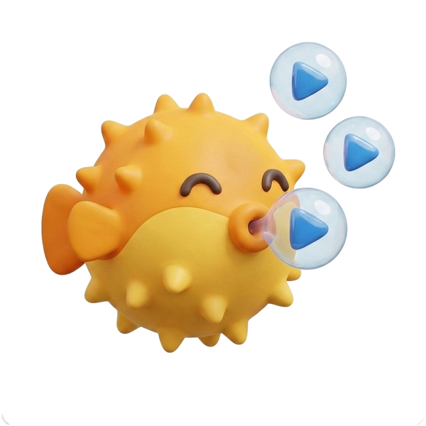

One-tap bulk compression
You do not need to export, trim, and re-save media one by one. Aglio makes the heavy files the easy decision.

Aglio SafetyAglio is built to keep cleanup moving so you do not end up stuck in a hundred tiny decisions.
You do not need to export, trim, and re-save media one by one. Aglio makes the heavy files the easy decision.
Similar-photo flows help you keep the strongest image instead of comparing tiny differences forever.
The app is built to surface the obvious cleanup wins first, so saving space feels more like momentum and less like work.
If something feels unclear, you can reach the developer directly instead of digging through a maze of support docs.